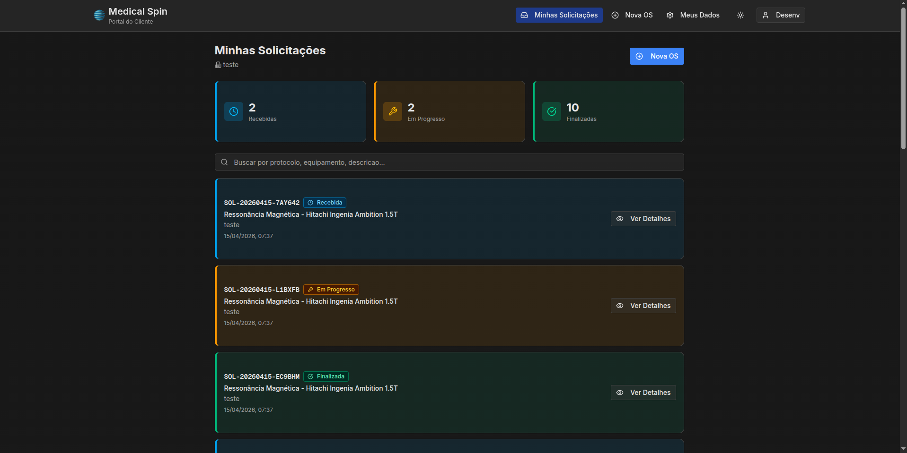
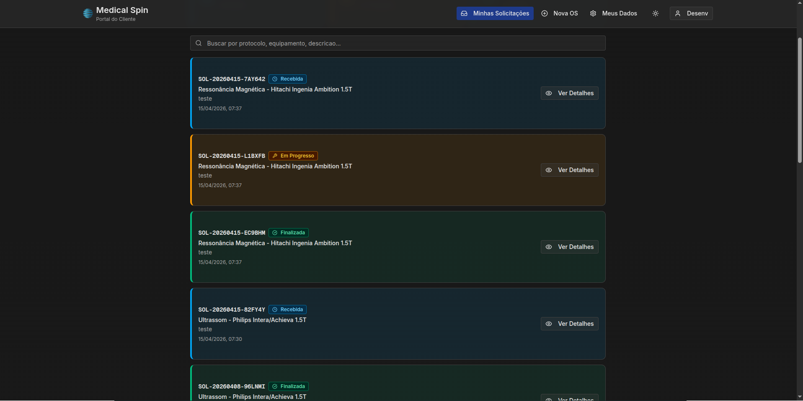
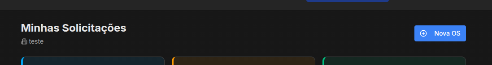
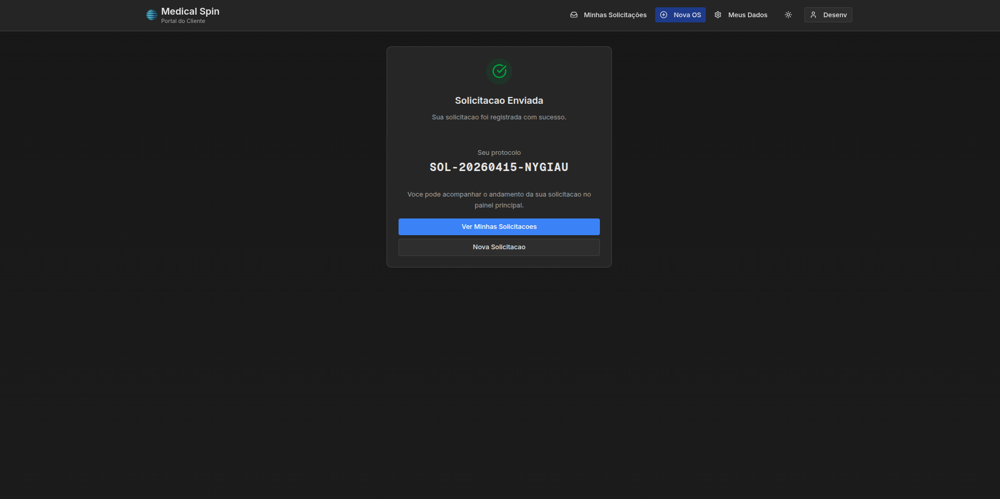
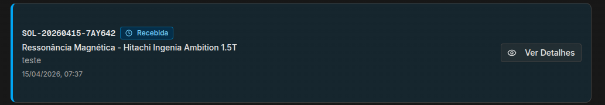
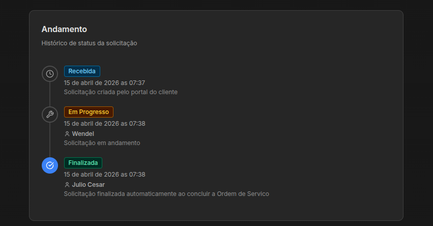
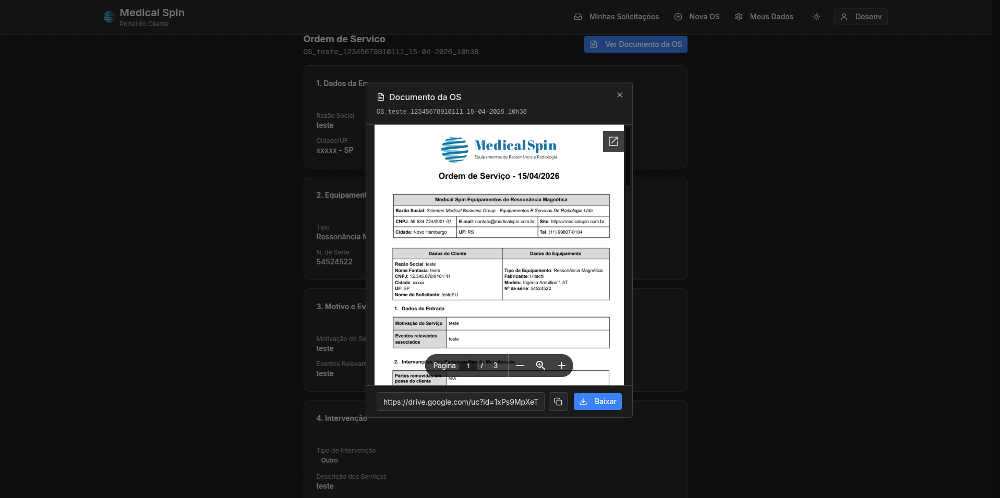
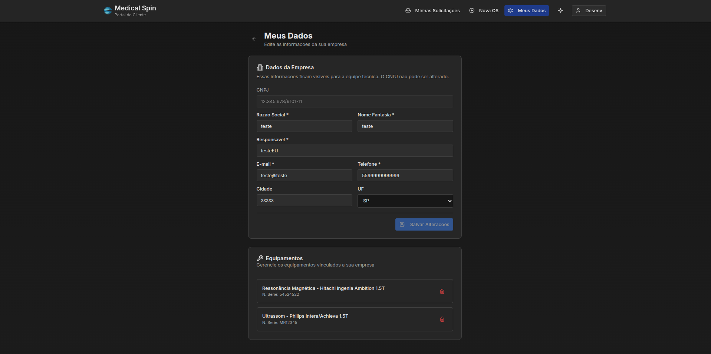

Figura 1 - Tela de Login: Screenshot da página de login do sistema mostrando os campos de e-mail e senha
Sistema de Ordens de Serviço - Portal do Cliente
Versão 1.0 - Abril 2026
Bem-vindo ao Portal do Cliente do Sistema de Ordens de Serviço. Este manual foi desenvolvido para orientá-lo sobre todas as funcionalidades disponíveis para você como cliente.
Através do portal, você pode:
Para acessar o portal do cliente pela primeira vez, você precisará das credenciais fornecidas pela equipe técnica:
Figura 1 - Tela de Login: Screenshot da página de login do sistema mostrando os campos de e-mail e senha
Caso não possua credenciais de acesso, entre em contato com a equipe técnica para solicitar o cadastro da sua empresa no sistema.
O painel principal apresenta uma visão geral de todas as suas solicitações de serviço. Ao acessar, você verá:

Figura 2 - Painel Principal do Cliente: Visão geral do dashboard do cliente com cards de estatísticas e lista de solicitações
Na parte superior, três cards mostram o resumo das suas solicitações:

Figura 3 - Cards de Estatísticas: Detalhe dos três cards mostrando Recebidas, Em Progresso e Finalizadas
Utilize a barra de busca para encontrar solicitações específicas. Você pode buscar por:
Abaixo dos cards, a lista exibe todas as suas solicitações com informações resumidas. Cada item mostra:

Figura 4 - Lista de Solicitações: Exemplo de solicitações listadas com status, protocolo e informações do equipamento
Para criar uma nova solicitação de serviço técnico, siga os passos abaixo:

Figura 5 - Tela de Nova Solicitação: Formulário completo de criação de nova solicitação de serviço
Figura 6 - Seleção de Equipamento: Lista de equipamentos cadastrados para seleção na nova solicitação
Figura 7 - Upload de Mídias: Área de upload de fotos e vídeos com preview das mídias anexadas
Guarde o número do protocolo! Ele será útil para acompanhar o andamento da sua solicitação e para comunicação com a equipe técnica.

Figura 8 - Confirmação de Envio: Tela de confirmação mostrando o número do protocolo gerado
Todas as suas solicitações ficam visíveis no painel principal. O sistema permite acompanhar em tempo real o status de cada solicitação.
Utilize os recursos de filtro para encontrar solicitações específicas:
O sistema pode enviar notificações por e-mail quando houver atualizações nas suas solicitações, como mudança de status ou conclusão do serviço.
Ao clicar em "Ver Detalhes" em uma solicitação, você terá acesso a todas as informações:

Figura 9 - Página de Detalhes da Solicitação: Visão completa dos detalhes de uma solicitação com todas as informações e histórico

Figura 10 - Timeline de Status: Histórico visual das alterações de status da solicitação com datas e horários
Texto completo da descrição enviada na solicitação.
Visualização das fotos e vídeos enviados junto com a solicitação.
Figura 11 - Galeria de Mídias: Visualização das fotos e vídeos anexados à solicitação
Após a finalização, você poderá visualizar e baixar a Ordem de Serviço completa em formato PDF, contendo:

Figura 12 - Visualização da Ordem de Serviço: Botão para visualizar/baixar a OS em PDF quando a solicitação está finalizada
Na página "Meus Dados", você pode visualizar e editar as informações da sua empresa, além de gerenciar seus equipamentos.

Figura 13 - Página Meus Dados: Tela completa de visualização e edição dos dados da empresa
Informações que podem ser visualizadas e editadas:
Na seção de equipamentos, você pode:
Figura 14 - Lista de Equipamentos: Seção de equipamentos mostrando a lista com opções de edição e gerenciamento
Equipamentos vinculados a solicitações ou ordens de serviço não podem ser excluídos permanentemente, apenas inativados. Isso garante a integridade do histórico de atendimentos.
Cada solicitação possui um status que indica seu andamento:
Recebida A solicitação foi recebida e aguarda análise da equipe técnica.
Em Progresso A equipe técnica está trabalhando na sua solicitação.
Finalizada O serviço foi concluído. A Ordem de Serviço está disponível para visualização.
Na página de detalhes, você pode ver todo o histórico de alterações de status, incluindo:
Figura 15 - Timeline de Status: Exemplo visual do histórico de alterações de status
Em caso de dúvidas ou problemas com o sistema:
Entre em contato através dos canais oficiais fornecidos pela empresa responsável pelo sistema.
Se você estiver com dificuldades para acessar o sistema:
O sistema foi desenvolvido para facilitar sua comunicação com a equipe técnica. Quanto mais detalhes você fornecer nas solicitações, mais rápido e eficiente será o atendimento.